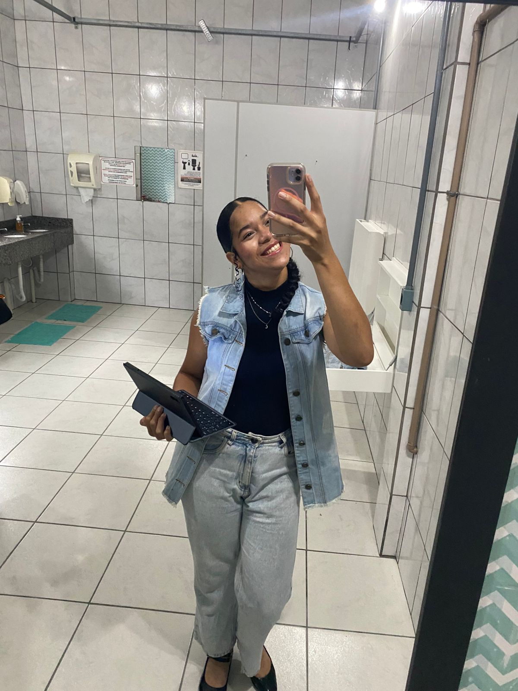

Essa é a sua primeira página
Este é o nome da criadora desta página: Isadora Abreu
This not is my frist page
Esta é uma foto da criadora desta página:
Visiste o senac

LISTA NÃO ORDENADA DOS MEUS HOBBIES:
- Pintura
- Cozinhar
- Assistir F1
LISTA ORDENADA DE PASSOS PARA LIGAR O PC:
- Verifique a Energia: Certifique-se de que o cabo de força está bem conectado à tomada
- Pressione o Botão Power: Localize o botão principal no gabinete
- Ligue o Monitor: Se a tela não acender sozinha, pressione o botão de energia do monitor